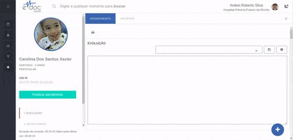

Sair sem finalizar atendimento
Sair sem finalizar atendimento
Após iniciar um atendimento, é possível sair sem finalizar o mesmo. Essa situação é comum quando um profissional abre um atendimento por engano e não deseja salvar um dado que será inalterável.
Importante
- Ao sair sem salvar o atendimento, tudo o que foi escrito nos documentos desta sessão será apagado. Ou seja, se você já digitou alguma informação, essa informação será perdida.

- Clique no "x" no canto superior direito da tela de atendimento
- Confirme que aceita perder todos os dados inseridos até o momento no atendimento